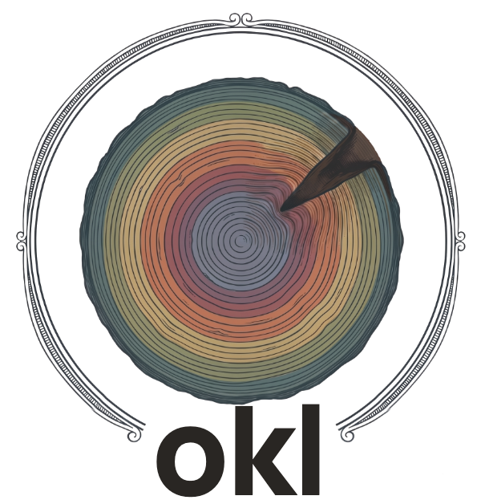
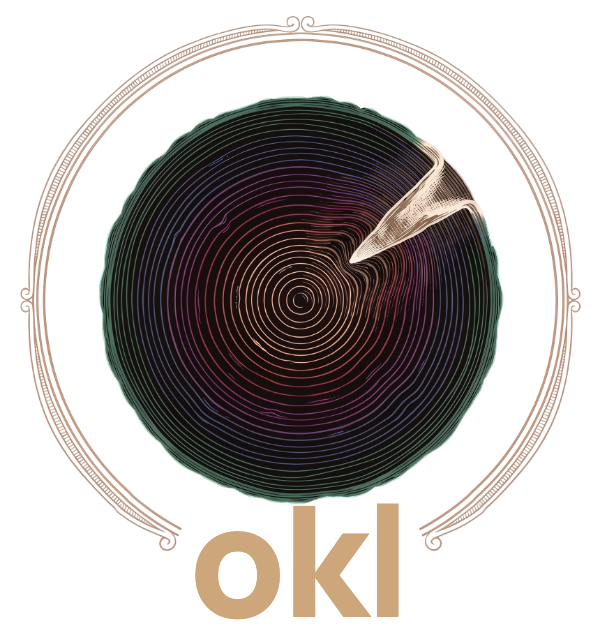

One shape for every lesson
A paragraph can't be routed into an action; a lesson can.
when you seea request body carries Price
docompute it server-side
whythe client sets its own price


okl works with your agent: it brings your rules and ADRs into context before each task, proves them with checks you choose, and blocks the push when the code they govern changes.
* Claude Code hooks brief every prompt and ask at session end; other MCP agents call okl_check. The push gate works with any agent.
A paragraph can't be routed into an action; a lesson can.
org reaches repos that load it. repo stays here, so a local quirk never fires elsewhere.
Ranked by the task, scoped, capped, and it says how many it trimmed.
A check you chose must run and pass, and the stamp keeps the command it ran. A stamp with no run behind it is unproven.
Files changed since the check passed? The pre-push hook or CI fails until it is re-proven.
Wrong or outdated lessons get fixed or retired; a retirement keeps its reason.
pipx install 'observed-knowledge-ledger[mcp]'okl init --repo my-repookl record --type Rule --scope repo --files app/orders.py --title "…"okl verify <id> --run "pytest -q" --expect passed